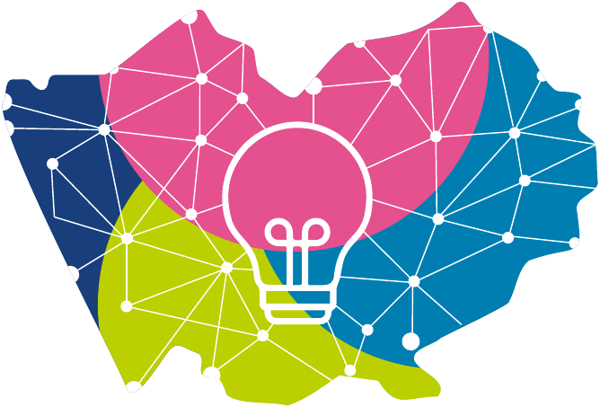

Место
Название проекта
Команда
Описание идеи

Краевой онлайн-конкурс
Интерактивная карта детских инициатив Алтайского края
Место
Команда
Описание идеи
Место
Команда
О проекте
«Цифровая лаборатория. Территория идей» — это проект дополнительного образования, в котором школьники 5-8 классов прошли путь от идеи до собственного проектного решения.
Участники исследовали проблемы своих школ, городов и сёл, работали в командах, искали способы реализации и создавали визуализации с применением технологий искусственного интеллекта. ИИ стал для ребят инструментом исследования, творчества и презентации замысла.
Нам было важно увидеть, о чём мечтают дети и какой они хотят видеть среду вокруг себя. Многие детские идеи уже близки к тому, что реально создаётся в Алтайском крае в рамках региональных и национальных проектов. Но есть и необычные, смелые и неожиданные предложения.
С этими решениями мы и предлагаем познакомиться на интерактивной карте детских инициатив Алтайского края.